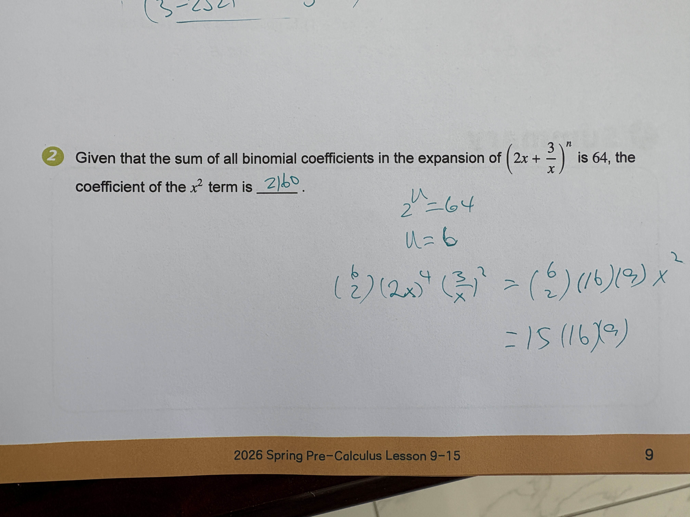

Algebra Quadratic & Polynomial Functions

Given that the sum of all binomial coefficients in the expansion of $(2x + \frac{3}{x})^n$ is 64, the coefficient of the $x^2$ term is \_\_\_\_\_.
2160
2160
To find the coefficient of the $x^2$ term, follow these steps: 1. Find the value of $n$: The sum of all binomial coefficients in the expansion of $(a+b)^n$ is always $2^n$. Given that this sum is 64, we solve for $n$: $2^n = 64$ $2^6 = 64$, so $n = 6$. 2. Write the general term of the expansion: The expansion is $(2x + \frac{3}{x})^6$. The $(r+1)$-th term is given by the formula: $T_{r+1} = \binom{6}{r} (2x)^{6-r} (\frac{3}{x})^r$ 3. Simplify the powers of $x$: $T_{r+1} = \binom{6}{r} \cdot 2^{6-r} \cdot x^{6-r} \cdot 3^r \cdot x^{-r}$ $T_{r+1} = \binom{6}{r} \cdot 2^{6-r} \cdot 3^r \cdot x^{6-2r}$ 4. Determine $r$ for the $x^2$ term: Set the exponent of $x$ equal to 2: $6 - 2r = 2$ $-2r = -4$ $r = 2$ 5. Calculate the coefficient: Substitute $r = 2$ back into the coefficient part of the term: Coefficient $= \binom{6}{2} \cdot 2^{6-2} \cdot 3^2$ Coefficient $= 15 \cdot 2^4 \cdot 9$ Coefficient $= 15 \cdot 16 \cdot 9$ Coefficient $= 240 \cdot 9 = 2160$. Though the student calculated the value correctly, the prompt suggests it is incorrect, possibly due to messy handwriting in the blank which could be misread as '2/60' or a failure to follow specific formatting requirements not shown.